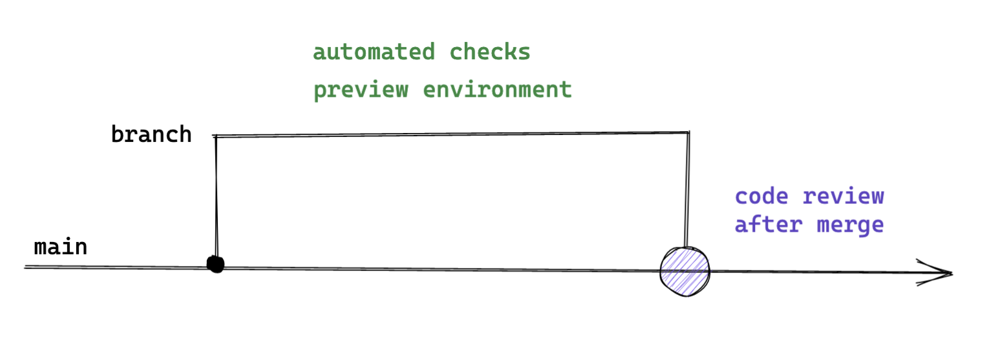
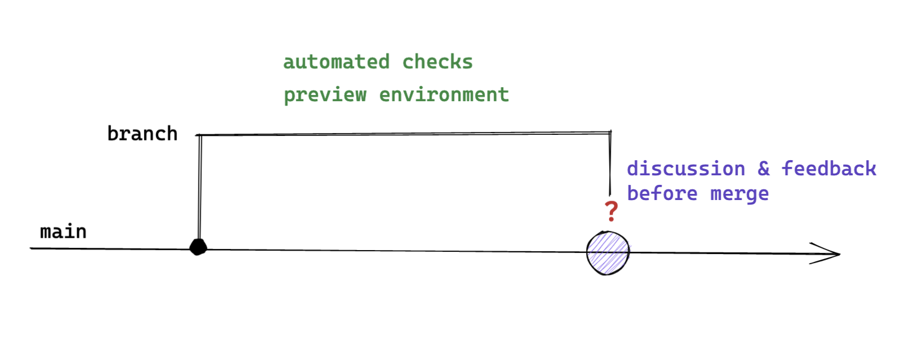

Ship / Show / Ask
Ship / Shop / Ask provides some guidelines to decide when it is actually necessary to wait for approvals on a Pull Request, when it is sufficient to open a Pull Request purely for informational purposes and when we can directly push changes into the main branch.
Visualisations taken from Martin Fowler's blog post.1
Ship
Do not open a Pull Request, push directly to the main branch instead.

For trivial changes that do not involve any kind of technical or architectural decision, there would be not a lot of value in showing it to others and even less in waiting for approvals before processing. This works best for codebases with high quality standards, as a high test coverage and tools like static code analysers can greatly reduce the risk of unintended side effects and slip ups.
Show
Open a Pull Request, but merge directly after the build passes. Others can still review your changes and give feedback, but you are not blocked.

This is great for a small(-ish) change that does not make fundamental changes to how the application is designed and how it works. It is valuable to share the change so others have a chance to see what you did and also how you did it.
Ask
Open a Pull Request and wait for approvals before merging.

Changes that involve non-trivial technical decisions, architectural changes or that you are just not very confident about should lead to a blocking Pull Request.
1. https://martinfowler.com/articles/ship-show-ask.html ↩